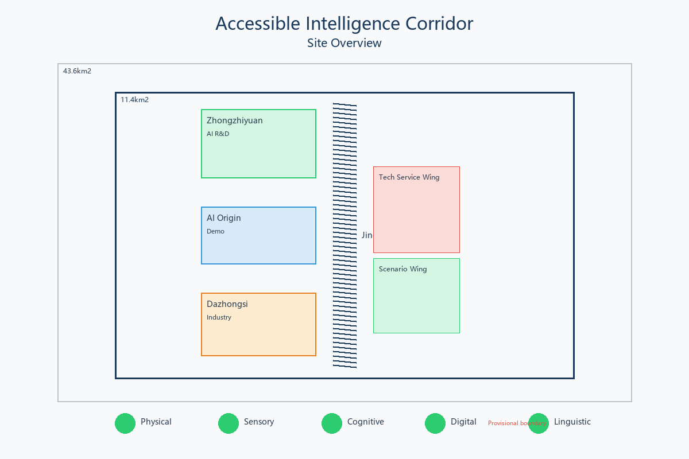
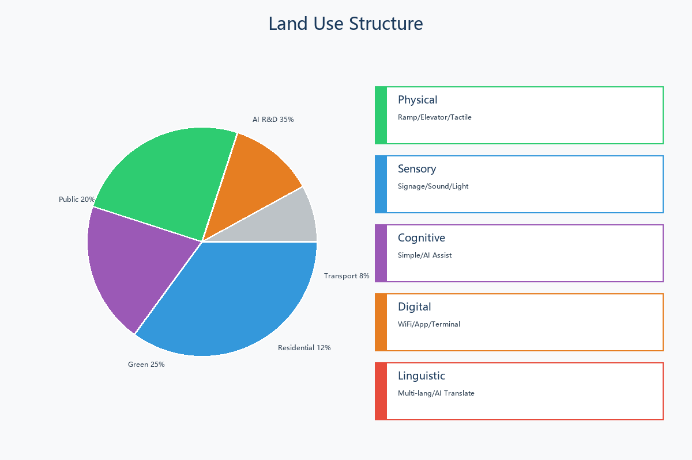
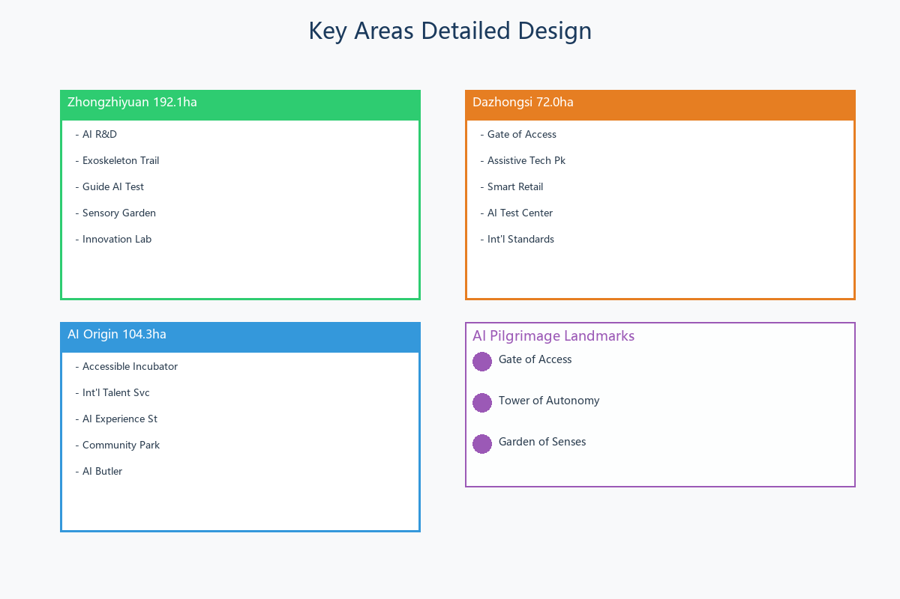
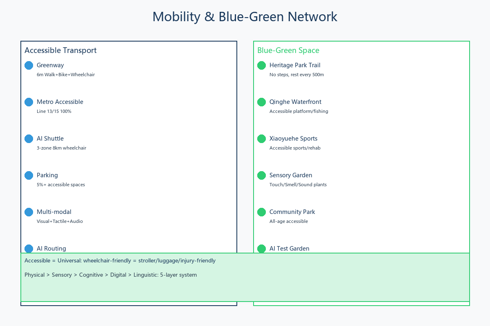
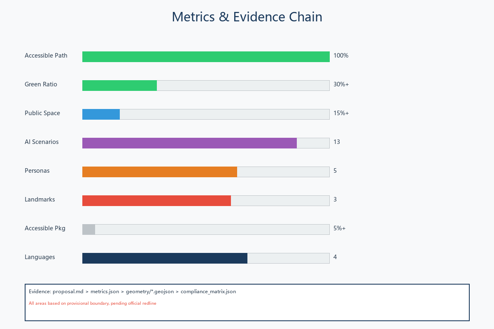

Accessible Intelligence Corridor: Universal Design for the Jingzhang AI Innovation Belt
A universal design and accessibility-centered approach proposing the world first AI accessibility innovation demonstration belt with 13 AI scenarios, 5 inclusive personas, and 3 pilgrimage landmarks.
Accessible Intelligence Corridor
Design Basis and Source List
This proposal is built upon public sources 来源:
Official Announcements: Pre-qualification announcement May 9, 2026 来源 defining 43.6 sq km research area, 11.4 sq km design area, 368.4 ha key areas. Global AI Agent Open Call Task Book 来源.
Professional Standards: MOHURD Urban Design Measures (2017) 标准, MOHURD Regulatory Planning 标准, MNR Land Use Classification (2023) 标准.
Accessibility Standards: GB 50763-2012, GB 55019-2021, Beijing Accessibility Ordinance (2021).
Spatial Data: Uses repository-provisional rough boundary 空间数据. All areas pending official redline. 深度

Three-Level Scope Framework
深度 Three progressive levels: Coordinated Research (43.6 sq km), Overall Design (11.4 sq km), Key Detailed Design (368.4 ha with three sub-areas).

Coordinated Research Area: Industry and Future City Research
Overall Concept [agent.1]
Naming: Accessible Intelligence Corridor (AIC). The Jingzhang Railway was China first independently designed railway - its spirit of "autonomy" echoes accessibility goal of enabling everyone to autonomously use the city.
Three Positionings 深度: Centennial Jingzhang Cultural Belt, Urban AI Life Experience Belt, AI Integration Innovation Belt.
Five Functions 深度: AI Full-Stack Innovation, World-Class Ecosystem, AI+ Scenario Empowerment, Intelligent AI City, AI Governance Global Voice.
Three Areas Two Wings 深度: Zhongzhiyuan (AI R&D), AI Origin (Scenario Demo), Dazhongsi (Industry Cluster), Zhongguancun Wing (Services), Xiaoyuehe Wing (Scenarios).
AI Ecosystem Design [agent.2]
8 Global Cases 深度: Wayfindr (London, BLE audio nav), Microsoft Soundscape (3D audio), Loro (SF, sign language AI), WHILL (Japan, autonomous wheelchair), Be My Eyes (GPT-4V visual assist), SignAll (sign language recognition), Waymo Access (accessible AV), Tokyo 2020 Accessible Tech.
Overall Design Area: Urban Renewal
Five-Layer Accessibility System 深度: Physical (ramps, elevators, tactile paths), Sensory (multi-modal wayfinding, soundscape, lighting), Cognitive (simple signage, AI assist, safety), Digital (WiFi, app, AI terminals), Linguistic (4+ languages, AI translation).
Detailed Design of Key Areas
Zhongzhiyuan (192.1 ha) 深度
Accessible AI R&D and testing base. Exoskeleton experience trail, Guide AI test zone, Sensory garden.
AI Origin Community (104.3 ha) 深度
Accessible scenario demo and international talent hub. Accessible incubator, Community AI butler.
Dazhongsi (72.0 ha) 深度
Accessible AI industry cluster. Gate of Access landmark, Assistive tech park, Smart retail.

AI Innovation Ecosystem, Personas, and AI+ Scenarios
5 Personas 深度
1. Li (28): Wheelchair user, AI engineer - Physical + Digital accessibility 2. Zhang (55): Blind, retired teacher - Sensory + AI guide 3. Wang (21): Deaf, university student - Sensory + AI sign language 4. David (35): US researcher, no Chinese - Linguistic + Cultural 5. Liu (78): Mild cognitive impairment - Cognitive + AI companion
13 AI Scenario Cards 深度
1. AI Guide Blind Navigation (BLE + audio) 2. AI Sign Language Terminal (gesture recognition) 3. AI Autonomous Wheelchair (LiDAR + obstacle avoidance) 4. AI Multi-Language Service (50+ languages) 5. AI Cognitive Assist (simplified UI + voice) 6. AI Environment Monitoring (IoT sensors) 7. AI Accessible Route Planning (realtime) 8. AI Sports Health (motion + rehab) 9. AI Cultural Guide (voice + AR) 10. AI Emergency Management (evacuation + shelter) 11. AI Community Governance (industry test) 12. AI Assistive Device Matching (industry test) 13. AI Building Check (industry test)
Land Use
Conceptual layout based on provisional boundary 深度: R&D 35%, Public 20%, Green 25%, Residential 12%, Transport 8%. All pending official controls.
Transport and Public Services
深度 Accessible slow-traffic streets, 100% accessible transit, accessible parking 5%+, AI low-speed shuttle between key areas.

Blue-Green Network and Public Space
深度 6m accessible greenway, rest stations every 500m, sensory gardens.
3 Pilgrimage Landmarks [agent.4]
1. Gate of Access (Dazhongsi): Spiral ramp, accessibility history 2. Tower of Autonomy (Wudaokou): Innovation center, honor wall 3. Garden of Senses (Qinghe): Sensory experience park
Phasing
深度 Near-term (2026-2027): Foundation. Mid-term (2028-2030): Full deployment. Long-term (2031-2035): Maturity.
Long-term Operations [agent.6]
Annual summit, hackathon, experience week. Open source community. International partnerships. Innovation fund and industry alliance.
Metrics

Accessible path 100%, Green 30%+, Public space 15%+, Scenarios 13, Personas 5, Landmarks 3, Parking 5%+, Languages 4. All based on provisional boundary.
Risk and Compliance
Risk: Privacy 2/5, Implementation 4/5, Acceptance 2/5, Operations 3/5, Policy 2/5, Spatial 3/5, Tech 3/5, Equity 1/5.
All suggestions are conceptual. No regulatory conclusions or statutory claims.
References
1. Beijing Planning Commission. Pre-qualification Announcement. 2026-05-09. 2. open-city.ai. Agent Task Book. 2026-05-18. 3. MOHURD. Urban Design Measures. 2017. 4. MOHURD. Regulatory Planning Methods. 5. MNR. Land Use Classification. 2023-11. 6. MOHURD. GB 50763-2012. 7. MOHURD. GB 55019-2021. 8. Beijing. Accessibility Ordinance. 2021. 9. Wayfindr. Audio Navigation. wayfindr.net. 10. Microsoft. Soundscape. 11. CDPF. Statistics. 2025. 12. UN. CRPD. 2006.